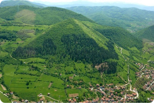

Bosnie en ruines, pourquoi ?
La Bosnie est aujourd’hui en ruine, et pour cause, un acte effroyable causé par l’armée serbe. Logement, champs, Monument religieux musulmans, toutes ces infrastructures ont été détruite, explosé, ou fusillé par les serbes.

Pourquoi les serbes ont-ils détruit les mosquées ?
Pendant la guerre de Bosnie, le but final du Génocide Bosniaque causé par les serbes était un « nettoyage ethnique », en effet, les serbes étant de religion orthodoxes, voulaient exterminé les bosniaques musulmans, et ont donc profité de tuer des milliers d’humains, pour également détruire les monument religieux musulmans !
Quand est-il de la Bosnie aujourd’hui ?
Depuis plusieurs années maintenant, la Bosnie essaye de panser les plaies de guerre causées par les serbes. Entre la corruption, et autre... Le pays peine à se développer, les bosniaques ayant déménagé à l’étrangé, aident le pays à se développer, en reconstruisant leurs maisons, entreprises, et autre. La Bosnie essaye aujourd’hui d’entré dans l’Union Européenne, et elle n’en est pas loin, j’éspere que d’ici quelques années ce sera le cas, et que la Bosnie se développera d’ici là. Malgré les aspects négatifs (corruption, etc..) la Bosnie, grâce à ses magnifiques paysages, devient une destination touristique ! Les pyramides du village de “Visoko” attirent des touristes venant de tous les pays du monde ! Et permettent ainsi à la Bosnie de ce développer sur l’aspect tourristique ainsi qu’économique.
